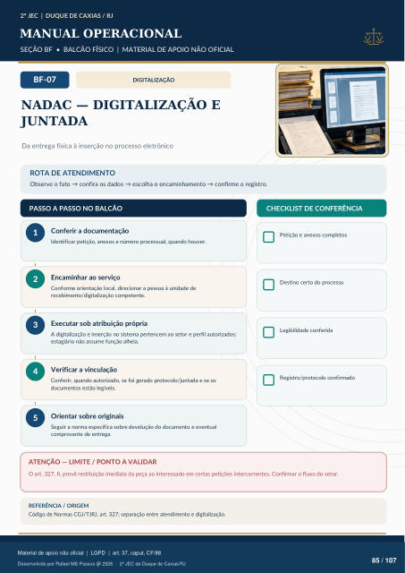

DIGITALIZAÇÃO
NADAC — DIGITALIZAÇÃO E
JUNTADA
Da entrega física à inserção no processo eletrônico
ROTA DE ATENDIMENTO
Observe o fato → confira os dados → escolha o encaminhamento → confirme o registro.
PASSO A PASSO NO BALCÃO
CHECKLIST DE CONFERÊNCIA
Conferir a documentação
Identificar petição, anexos e número processual, quando houver.
Encaminhar ao serviço
Conforme orientação local, direcionar a pessoa à unidade de recebimento/digitalização competente.
Executar sob atribuição própria
A digitalização e inserção no sistema pertencem ao setor e perfil autorizados; estagiário não assume função alheia.
Verificar a vinculação
Conferir, quando autorizado, se foi gerado protocolo/juntada e se os documentos estão legíveis.
Orientar sobre originais
Seguir a norma específica sobre devolução do documento e eventual comprovante de entrega. Petição e anexos completos Destino certo do processo Legibilidade conferida Registro/protocolo confirmado
ATENÇÃO — LIMITE / PONTO A VALIDAR
O art. 327, II, prevê restituição imediata da peça ao interessado em certas petições intercorrentes. Confirmar o fluxo do setor.
REFERÊNCIA / ORIGEM
Código de Normas CGJ/TJRJ, art. 327; separação entre atendimento e digitalização.
Ver também o infográfico original (página 85)
